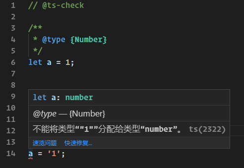

我们知道 TypeScript 2.3 以后的版本支持使用--checkJs对.js文件进行类型检查和错误提示。 但是由于 JavaScript 是弱类型语言，在编写代码的时候，是无法检测变量的类型的。
因此每次运行代码类型报错的时候，我心中都会冒出来一个强烈的愿望：要是 JavaScript是强类型的多好！
好消息是，JSDoc 的 @ts-check，可以现实这个愿望。
如果能有机会使用 TypeScript 那当然是最好，但是往往开发的老项目在早期都是 JavaScript 完成的，如果都迁移到 TypeScript 版本工作量是庞大的，而且不可避免出现许多bug问题，那么有没有一种方式可以无痛的在使用JavaScript的同时享受到TypeScript的类型检查呢？
答案就是 // @ts-check，在 js 文件的头部引入这样一行注释，然后配合JSDoc就可以在JavaScript代码中使用 TypeScript的类型检查了。
举个例子，在下图中我们首先声明了一个变量 a，然后把数字 1 赋给了它，接着又把字符串 '1' 赋给了它，看起来好像没有什么问题，而且运行起来也不会报错。
let a = 1;
a = 'a';然后我们加上 // @ts-check 试试：
// @ts-check
/**
* @type {Number}
*/
let a = 1;
a = '1';神奇的一幕出现了，在变量a赋值的下面，出现了红色波浪线，鼠标放上去提示：
let a: number
@type — {Number}
不能将类型“"1"”分配给类型“number”。ts(2322)
也就是说我们将一个字符串赋值给了一个数字类型的变量是有问题的，这个时候我们未运行程序，但是编辑器已经帮我们分析出了代码可能存在的问题，这时候我们运行代码，是没有报错的。
因为这个类型检测只是让我们按照TypeScript的强类型语言检测类型问题，但是我们依然是JavaScript代码依然会按照JavaScript的代码逻辑运行，如是TypeScript代码的话，这里运行就会报错。
既然ts-check这么好用，我们来看看 JSDoc 类型的注释支持哪些类型的检测。
根据官方文档，JSDoc现在支持下面几个类型检测：
@type@param (or @arg or @argument)@returns (or @return)@typedef@callback@template@class (or @constructor)@this@extends (or @augments)@enum下面我们选择常用的标记进行说明，更多更详细的标记可以参考官方文档。
描述：用来声明变量的类型。
/**
* - string类型
* @type {string}
*/
let a1;
/**
* - windows对象类型
* @type {Window}
*/
let a2;
/**
* - string或者boolean类型
* @type {string | boolean}
*/
let sb;
// -------- 多种方式指定数组类型--------
/** @type {number[]} */
var ns;
/** @type {Array.<number>} */
var nds;
/** @type {Array<number>} */
var nas;
// ---- 还可以指定对象字面量类型。 例如，一个带有a（字符串）和b（数字）属性的对象---
/** @type {{ a: string, b: number }} */
var var9;描述：@param语法和@type相同，但增加了一个参数名。
/**
* 声明函数参数类型
* @param {string} p1 - p1 是 string 类型参数
* @param {string=} p2 - p2 是可选的 string 类型参数
* @param {string} [p3] - 另外一种可选参数写法
* @param {string} [p4="test"] - p4 是可选的 string 类型参数（默认值为 "test"）
* @return {string} - 函数返回值是 string 类型
*/
function fn3(p1, p2, p3, p4){
// TODO
}
/**
* 用 “return” 说明函数的返回值类型
* @return {number}
*/
function fn1() {}
/**
* 可以像使用 "@return" 一样使用 "@returns"
* @returns {{a: string, b: number}}
*/
function fn2() {}描述：@typedef 可以用来声明复杂类型，和@param类似的语法。
/**
* 用 "@typedef" 自定义复杂类型
* @typedef {Object} SpecialType - 创建一个新的类型 'SpecialType'
* @property {string} prop1 - SpecialType 属性 prop1 是 string 类型
* @property {number} prop2 - SpecialType 属性 prop2 是 number 类型
* @property {number=} prop3 - SpecialType 属性 prop3 是可选的 number 类型
* @prop {number} [prop4] - SpecialType 属性 prop4 是可选的 number 类型
* @prop {number} [prop5=42] - SpecialType 属性 prop5 是可选的 number 类型（默认值 42））
*/
/** @type {SpecialType} */
let specialTypeObject;可以在第一行上使用
object或Object。
经测试，在 VSCode 和IDEA下可以直接使用ts-check 的类型检测，sublime等编辑器不可以，应该是要下载对应的插件才可以。
对于老项目，使用 // @ts-check 和 JSDoc 来来享受TypeScript类型系统的好处是最简单、学习成本最低的方法。
而对于新项目，则更加推荐直接使用 TypeScript 来进行代码编写，并且各大框架里面都是用的TypeScript进行的代码编写，在可期的未来，TypeScript将会越来越受欢迎。